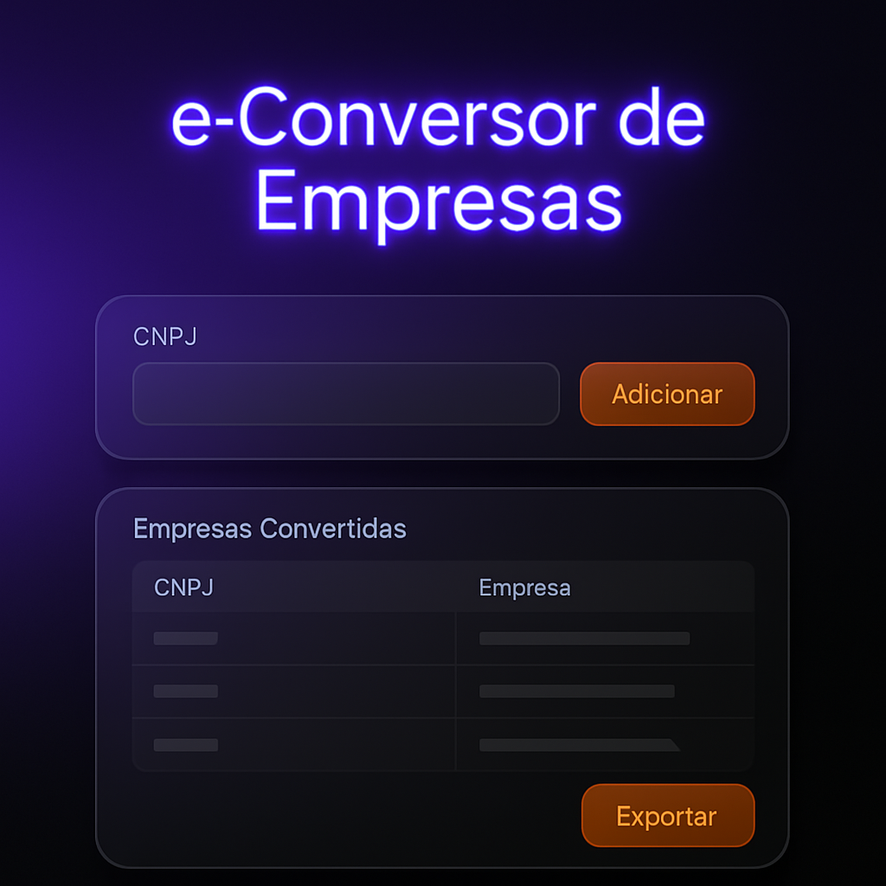
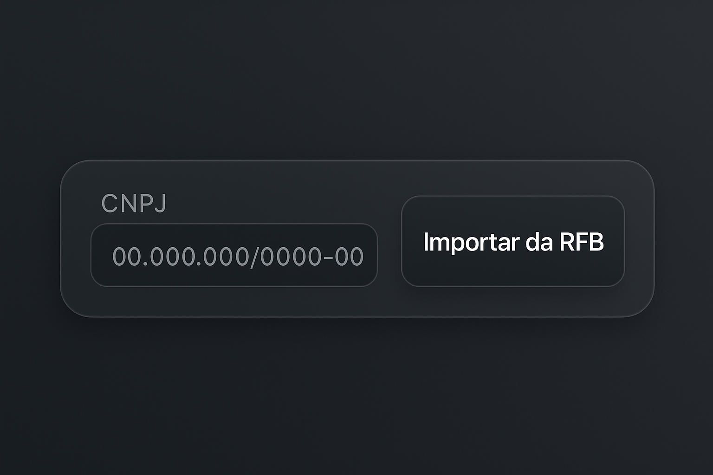
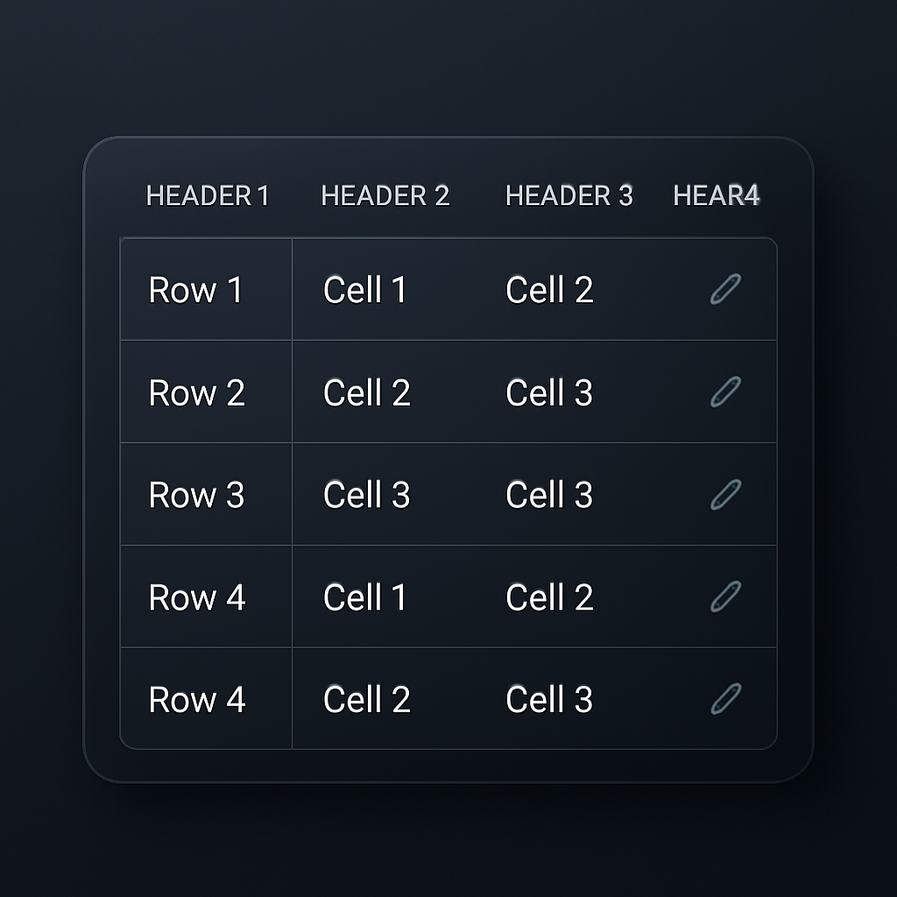

Ajuda - e-Conversor de Empresas
Esta ferramenta foi desenvolvida para facilitar a importação de dados de empresas diretamente do site da Receita Federal e a geração de um arquivo TXT compatível com outros sistemas.
Para importar os dados de uma ou mais empresas, siga os passos abaixo:
- No campo Lista de CNPJs, insira os CNPJs que deseja importar. Você pode inserir um CNPJ por linha, ou separá-los por vírgula, ponto e vírgula ou espaço. 
- Clique no botão Importar da RFB.
- Será solicitado que você informe o número inicial para o Código Empresa. Este código será usado para identificar as empresas importadas.
- A ferramenta irá processar cada CNPJ, buscando os dados na Receita Federal. Você verá uma barra de progresso indicando o andamento.
- Após a importação, as empresas convertidas serão exibidas na tabela Empresas Convertidas.
Você pode editar qualquer dado na tabela Empresas Convertidas antes de gerar o arquivo TXT. Basta clicar na célula que deseja editar e fazer as alterações necessárias.
Ao passar o mouse sobre uma célula editável, um ícone de lápis (✏️) aparecerá, indicando que a célula pode ser modificada.
Se alguma empresa não puder ser importada (por CNPJ inválido, erro na Receita Federal, etc.), ela será listada no painel Empresas Não Convertidas, juntamente com o erro ocorrido.

Após importar e, se necessário, editar os dados das empresas, você pode gerar o arquivo TXT para importação em outros sistemas:
- Clique no botão Gerar TXT.
- Um arquivo chamado
empresas_exportadas.txtserá baixado para o seu computador, contendo todos os dados da tabela Empresas Convertidas, prontos para serem utilizados em seu sistema.
- Certifique-se de que sua conexão com a internet está ativa para importar dados da Receita Federal.
- Verifique a formatação dos CNPJs inseridos para evitar erros de importação.
- O código inicial da empresa é sequencial e será incrementado automaticamente para cada empresa importada.